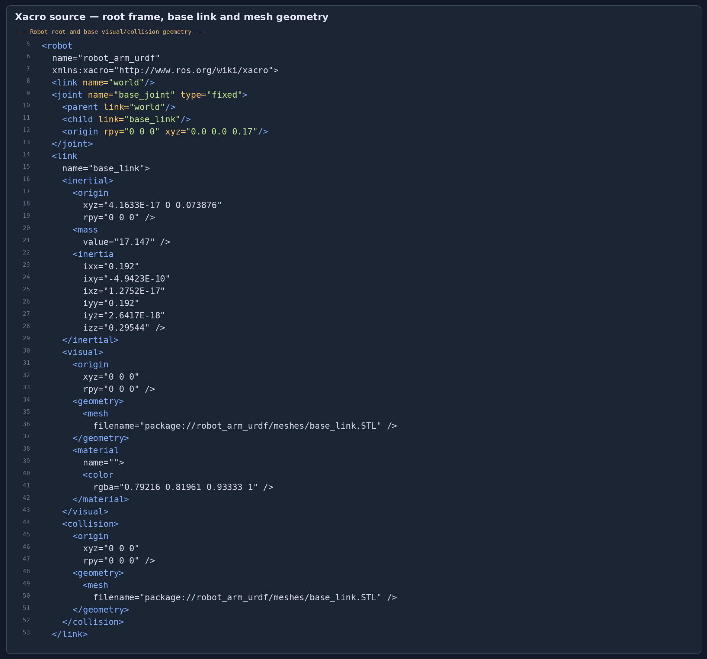
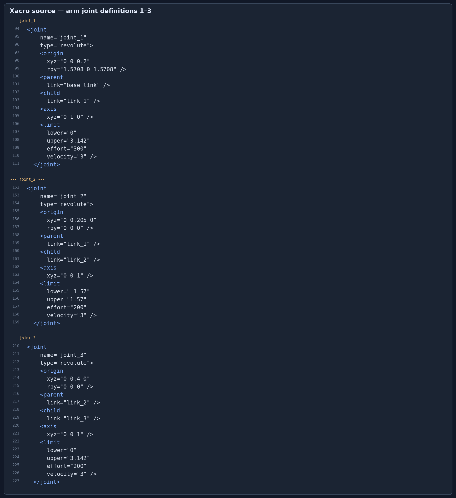
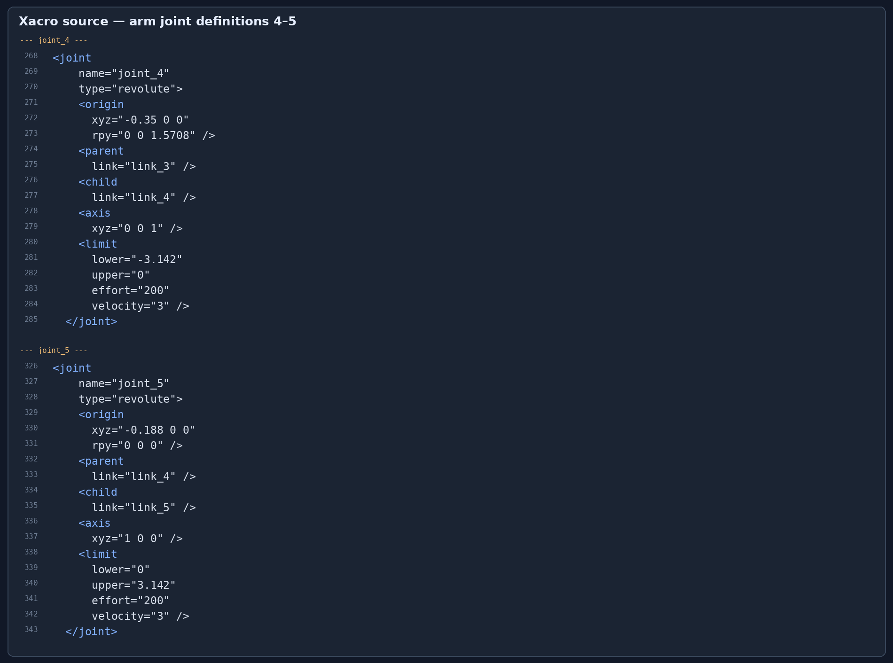
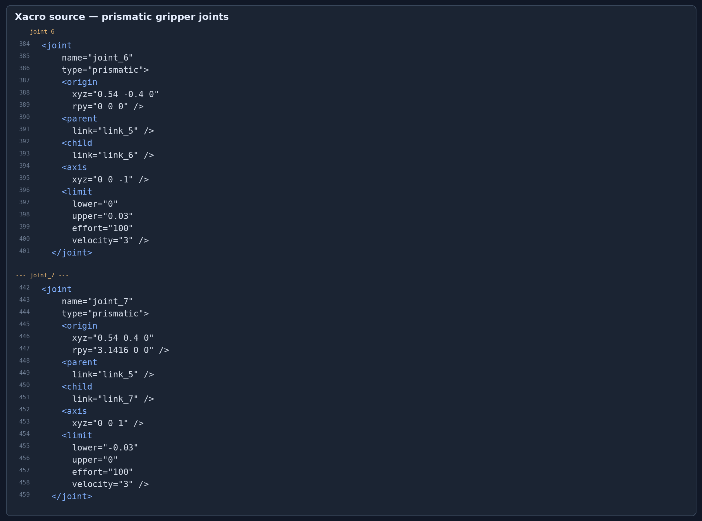
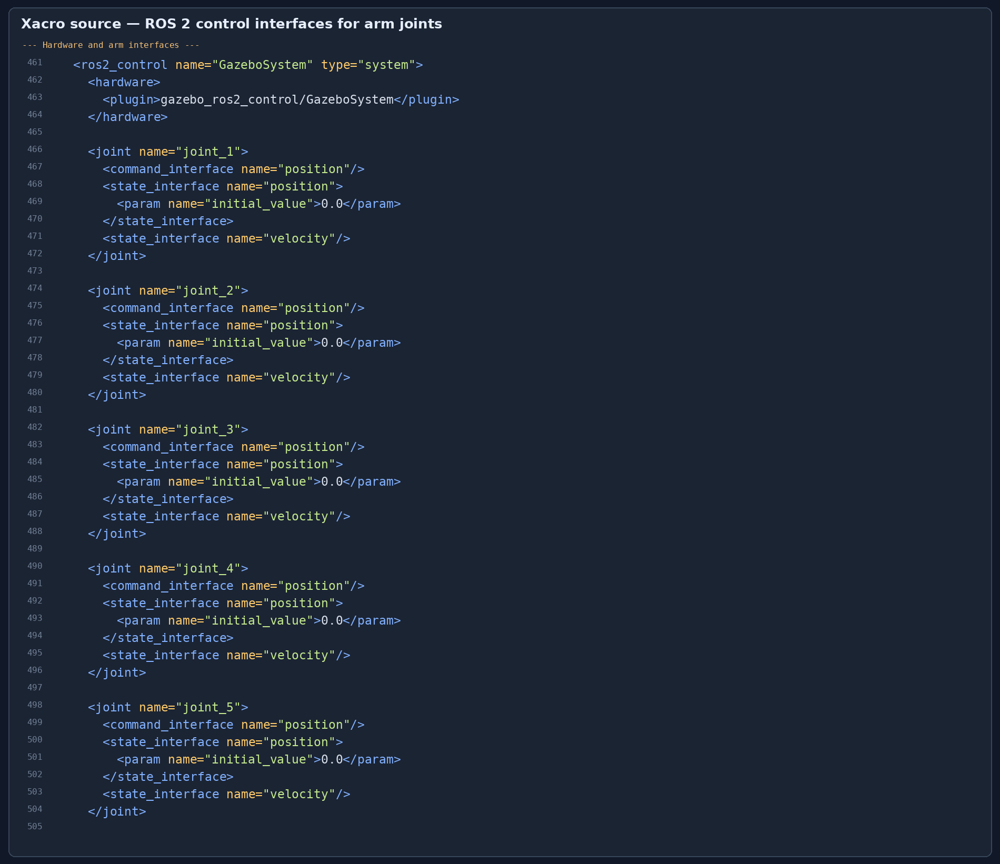
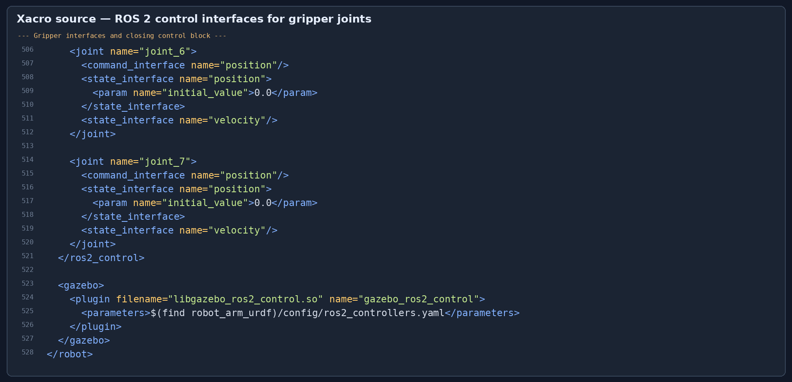
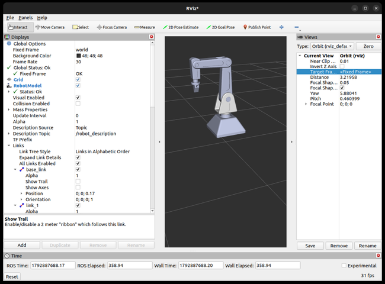
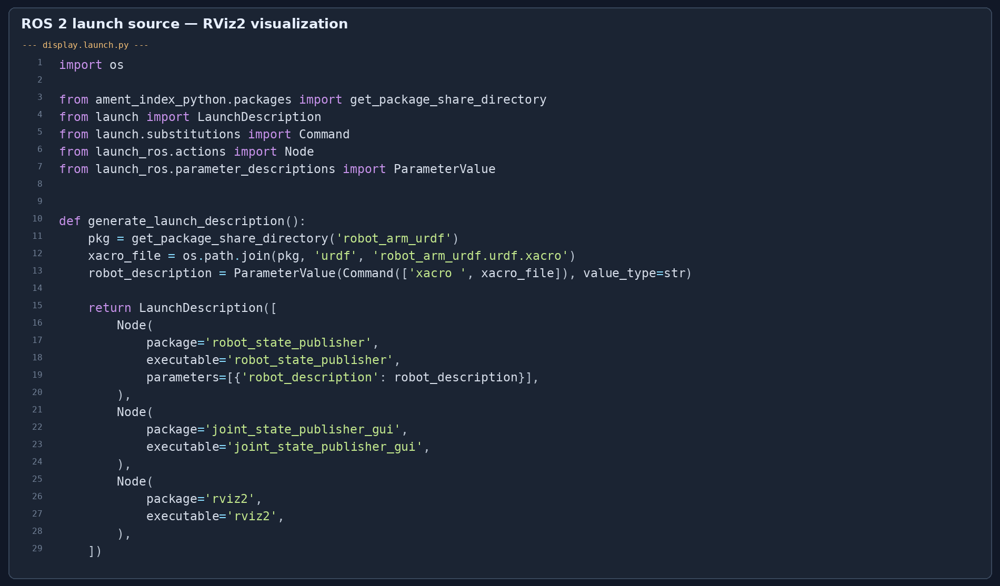
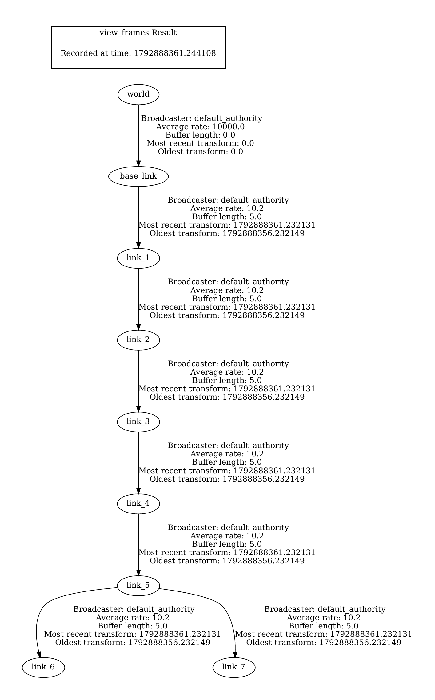
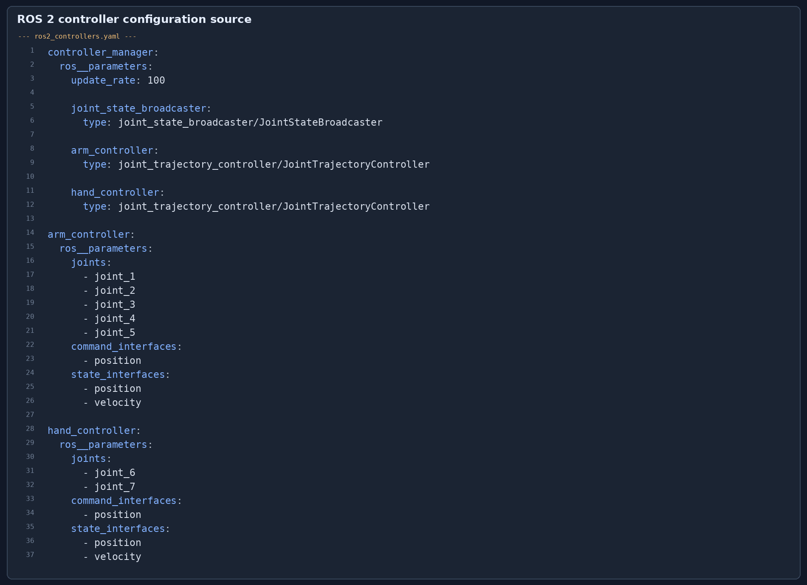

I began by thinking about the robot as a set of rigid links and the motions that connect them. I used
world as a stable reference, fixed the base to it, and arranged the arm links in a serial chain.
At the end of the arm, I attached two separate sliding finger links to represent the gripper. This structure keeps
the arm motion and gripper motion easy to identify in both the Xacro and the TF tree.
The included model contains five revolute arm joints and two prismatic gripper joints. I describe the gripper separately from the arm so the function of each movable joint is clear.
Question: Define the kinematic structure of the arm and label its joints and links.
Answer: I represented the root reference as world and attached the robot base,
base_link, with the fixed joint base_joint. Five revolute joints connect the arm
links sequentially. The final arm link, link_5, is the parent of the two prismatic gripper fingers.
world
└── base_joint (fixed) → base_link
└── joint_1 → link_1
└── joint_2 → link_2
└── joint_3 → link_3
└── joint_4 → link_4
└── joint_5 → link_5
├── joint_6 (prismatic) → link_6
└── joint_7 (prismatic) → link_7
The complete model has nine links including the reference frame, one fixed joint, five revolute arm joints, and two prismatic gripper joints.
Question: Define the links, including visual and collision geometry.
Answer: In my Xacro, base_link and link_1 through link_7
each have a visual element and a collision element. Their geometry references STL meshes in the package's
meshes/ directory. Visual elements specify material colours for rendering in RViz2; collision
elements describe the link shapes for collision-aware tools. The robot links also include inertial properties.
The world link is a reference frame and does not need geometry.

Figure 1. Xacro excerpt showing the robot root, fixed base, mesh visual, and collision geometry.
Question: Define joint types, parent–child relationships, axes, and limits.
Answer: Each moving joint names its parent and child links, type of motion, axis, and allowed range. Revolute limits are angular values in radians. Prismatic limits are linear distances in metres. The Xacro also provides effort and velocity limits.
| Joint | Type | Parent → child | Axis (XYZ) | Position limits | Effort / velocity |
|---|---|---|---|---|---|
| base_joint | Fixed | world → base_link | — | — | — |
| joint_1 | Revolute | base_link → link_1 | 0 1 0 | 0 to 3.142 rad | 300 N·m / 3 rad/s |
| joint_2 | Revolute | link_1 → link_2 | 0 0 1 | −1.57 to 1.57 rad | 200 N·m / 3 rad/s |
| joint_3 | Revolute | link_2 → link_3 | 0 0 1 | 0 to 3.142 rad | 200 N·m / 3 rad/s |
| joint_4 | Revolute | link_3 → link_4 | 0 0 1 | −3.142 to 0 rad | 200 N·m / 3 rad/s |
| joint_5 | Revolute | link_4 → link_5 | 1 0 0 | 0 to 3.142 rad | 200 N·m / 3 rad/s |
| joint_6 | Prismatic | link_5 → link_6 | 0 0 −1 | 0 to 0.03 m | 100 N / 3 m/s |
| joint_7 | Prismatic | link_5 → link_7 | 0 0 1 | −0.03 to 0 m | 100 N / 3 m/s |
The first value in the final column is the effort limit (N·m for revolute joints and N for prismatic joints); the second is the velocity limit.
These Xacro excerpts show how I connect the base and arm links, set each rotation axis, and constrain the joint range.

Figure 2. Source excerpts for revolute joints 1–3.
The next two revolute joints continue the arm chain and define the wrist-side orientation axes.

Figure 3. Source excerpts for revolute joints 4–5.
The gripper uses two prismatic joints attached to link_5. The opposite axis directions and 3 cm
limits represent the two fingers' sliding motion.

Figure 4. Source excerpts for the prismatic finger joints, their axes, and their travel limits.
Question: Assemble the links and joints into a complete URDF robot model.
Answer: I assembled the link meshes, inertial data, joint relationships, limits, and control declarations
in robot_arm_urdf.urdf.xacro. The fixed base joint anchors the structure at world;
the five arm joints form a connected chain and the gripper joints branch from link_5.
I built the package with colcon, expanded the Xacro, and checked the resulting URDF. The parser reported
world as the root and showed the expected arm chain and gripper branches.
cd /home/echo/moveit2_ws colcon build --packages-select robot_arm_urdf source install/setup.bash xacro src/robot_arm_urdf/urdf/robot_arm_urdf.urdf.xacro > /tmp/robot_arm.urdf check_urdf /tmp/robot_arm.urdf

Figure 5. Xacro source for the hardware declaration and arm joint interfaces.
The ROS 2 control block also declares position commands and position/velocity feedback for both gripper joints.

Figure 6. Xacro source for gripper interfaces and the optional Gazebo Classic plugin.
Question: Load the robot model in RViz and verify the visualization.
Answer: I launched the model using display.launch.py, which starts
robot_state_publisher, the Joint State Publisher GUI, and RViz2. In RViz2, I set the Fixed Frame to
world and enabled RobotModel. The screenshot shows the robot geometry and the RobotModel status as OK.
The Joint State Publisher GUI can be used to preview different joint positions. This demonstrates the model's kinematic visualization; it does not simulate forces or physical contact.
source /opt/ros/humble/setup.bash source /home/echo/moveit2_ws/install/setup.bash ros2 launch robot_arm_urdf display.launch.py

Figure 7. RViz2 visualization of the robot model with RobotModel status OK.
This launch file evaluates the Xacro description, publishes the robot state, opens the joint slider GUI, and starts RViz2.

Figure 8. Source of display.launch.py.
Question: Visualize and verify the robot's TF tree using ROS 2 tools.
Answer: I generated the frame report using tf2_tools view_frames. It lists eight frames:
world, base_link, and link_1 through link_7. The tree
shows the fixed base connection, the serial arm chain, and two gripper branches from link_5.
source /opt/ros/humble/setup.bash source /home/echo/moveit2_ws/install/setup.bash ros2 run tf2_tools view_frames
The generated TF report PDF and a readable image of the tree are included with the project files.

Figure 9. TF tree generated from the robot's published frames.
I grouped the five revolute joints under arm_controller and the two prismatic gripper joints under
hand_controller. The controller configuration requests position commands and position/velocity state
interfaces. The included Gazebo control plugin is for Gazebo Classic; the RViz2 visualization and TF checks above
are the demonstrations documented in this report.

Figure 10. Controller configuration for the arm and gripper.
robot_arm_urdf/ package: Xacro, launch files, controller YAML, meshes, package.xml, and CMakeLists.txt.screenshots/ folder.The editable report source is report.html. All submission materials are grouped under
ros2mini project/ for upload to the Drive folder.